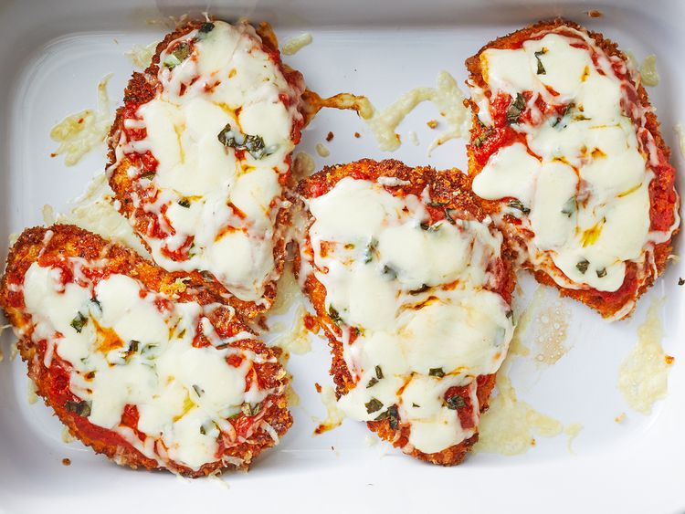

Chicken Parmesan
Home

Description
This is a chicken parmesan recipe inspired by
allrecipes.com.
Unlike restaurant versions, this one is not drenched in sauce and cheese.
This recipe yields two servings.
The breading will retain crispiness, and if you desire more sauce or cheese, you can add it
as you (or your guests) wish, after it has cooked.
Ingredients
- 2 skinless, boneless chicken breast halves
- salt and pepper
- 1 egg
- bread-crumbs
- Parmesan cheese
- flour
- olive oil
- tomato sauce
- mozzarella
- basil
- grated provolone cheese
Steps
- Pound breasts to be about 1/2 inch thick
- Add flour to bowl large enough to fit breast; add pepper
- Crack eggs in another bowl and whisk
- Add bread-crumbs to another large bowl and add grated parmesan
- Take each breast, dip and cover it in the flour, egg, and then the bread-crumbs
- Cover a pan with olive oil and heat it just under when it begins to smoke
- Fry the chicken breasts in the pan. Add butter while frying to ensure the oil does
not evaporate
- Move the fried breasts to an oiled or buttered pan. Add mozzarella and parmesan on them
- Broil/cook the breasts only long enough for the cheese to melt
- Serve the breasts with pasta sauce either above or below
- Optional: Serve along with pasta (this is common)